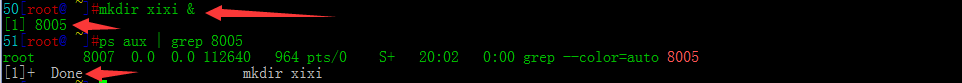
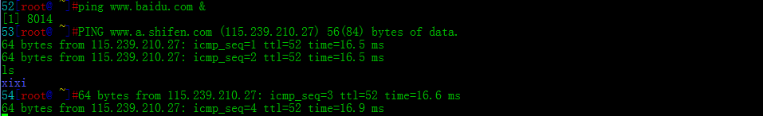
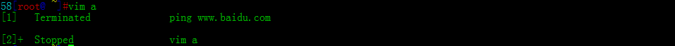
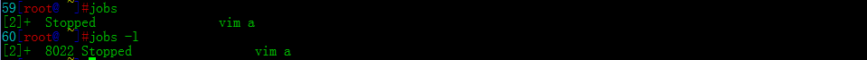
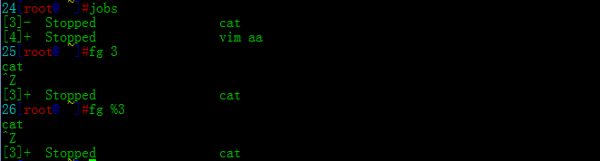
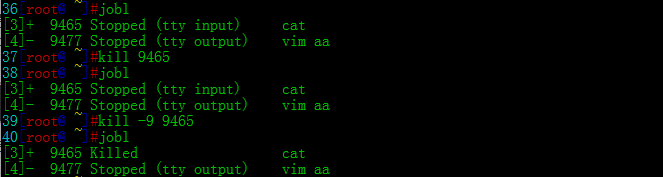
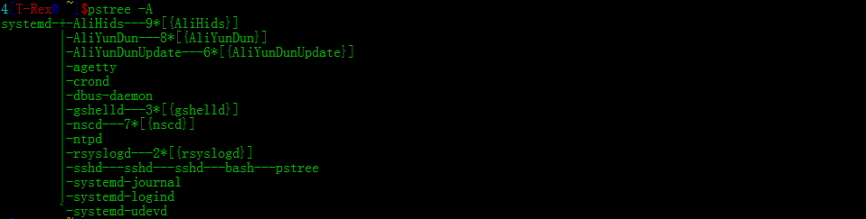
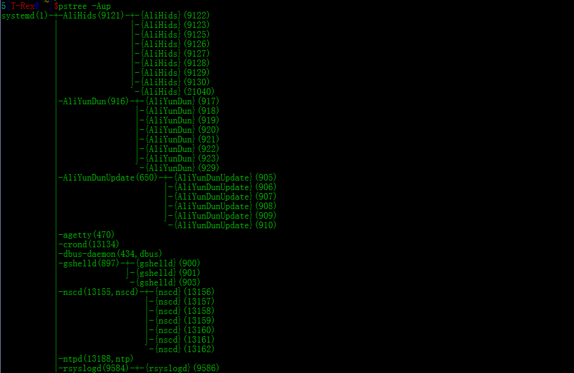
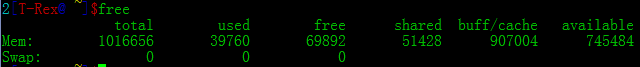
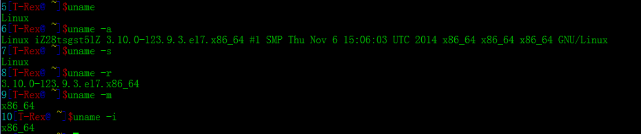

1.&:将命令扔到后台运行

出来的[1]是jobnumber,8005是PID,是该进程的ID,但该命令运行完后,会在屏幕显示Done,虽然命令是在后台运行的,但是它输出的东西依然会显示在屏幕上,然而并不会影响你的输入

比如上图的ls还是照常输出了，如果被这样满屏的东西亮瞎了狗眼,该怎么办呢？上节课的重定向都白学了吗？
2.[ctrl]+z:将目前的工作丢到后台并且暂停

3.jobs:观察目前的后台工作状态 jobs [-lrs] 选项与参数： -l ：除了列出 job number 与命令串之外，同时列出 PID 的号码； -r ：仅列出正在背景 run 的工作； -s ：仅列出正在背景当中暂停 (stop) 的工作
4.fg:将后台工作拿到当前来处理 fg %jobnumber 选项与参数： %jobnumber:其实%有无都行
5.bg:在后台的进程状态变成运行中 bg %jobnumber 选项与参数: %jobnumber:同上 6.kill:管理背景当中的工作 kill -signal %jobnumber kill -signal PID kill -l 选项与参数： -l ：列出目前kill能够使用的讯号(signal) signal ：讯号 -1 ：重新读取一次参数的配置档 -2 ：代表与由键盘输入 [ctrl]-c 同样的动作 -9 ：立刻强制删除一个进程 -15：以正常的程序方式终止一项工作进程
7.ps:将某个时间点的程序运行情况显示出来 ps aux :观察系统所有的程序数据 ps -lA :观察所有系统的数据 ps axjf :连同部分程序树状态

8.top:动态观察程序的变化 top [-d 数字] | top [-bnp] 选项与参数： -d ：接秒数,默认是5秒 -b ：以批量的方式运行 -n ：与-b搭配,运行多少次 -p ：指定PID 在 top 运行过程当中可以使用的按键命令： ? ：显示在top当中可以输入的按键命令 P ：以CPU的使用资源排序显示 M ：以Memory的使用资源排序显示 N ：以PID来排序 T ：由该Process使用的CPU时间累积(TIME+)排序 k ：给予某个PID一个讯号(signal) r ：给予某个PID重新制订一个nice q ：离开top 这个自己动手试试比较直观 9.pstree [-A|U] [-up] 选项与参数： -A ：各程序树之间的连接以 ASCII 字节来连接 -U ：各程序树之间的连接以万国码的字节来连接 -p ：并同时列出每个 process 的 PID； -u ：并同时列出每个 process 的所属帐号名称。

10.killall [-iIe] [command name] 选项与参数： -i :interactive,若需要删除时,会出现提示 -I :忽略大小写 11.free:观察内存使用情况
12.uname:查阅系统与核心相关信息 uname [-asrmi] 选项与参数： -a ：所有系统相关的信息，包括底下的数据都会被列出来 -s ：系统核心名称 -r ：核心的版本 -m ：硬件名称 -i ：硬件的平台